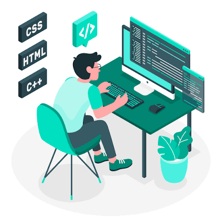
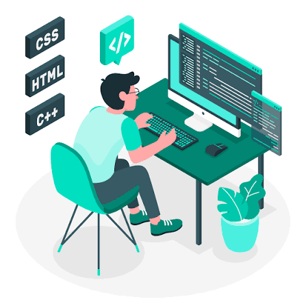

Goals & Aspirations
 

As a passionate web developer, my immediate goal is to continuously strengthen my skills in building responsive, interactive, and user-friendly web applications. I aim to explore modern frameworks, improve coding practices, and deliver solutions that are both visually appealing and technically robust.
In the mid-term, I aspire to contribute to innovative projects that address real-world challenges. Collaborating with diverse teams and engaging in projects that require problem-solving, creativity, and strategic thinking is a key focus. I want to leverage my skills to create applications that enhance user experience and provide tangible value to clients and communities.
Looking further ahead, my long-term ambition is to grow as a versatile full-stack developer and establish a professional portfolio that demonstrates expertise, reliability, and creativity. I strive to stay ahead of emerging technologies, continuously learn, and participate in projects that challenge me to expand my capabilities while making a meaningful impact in the digital space.